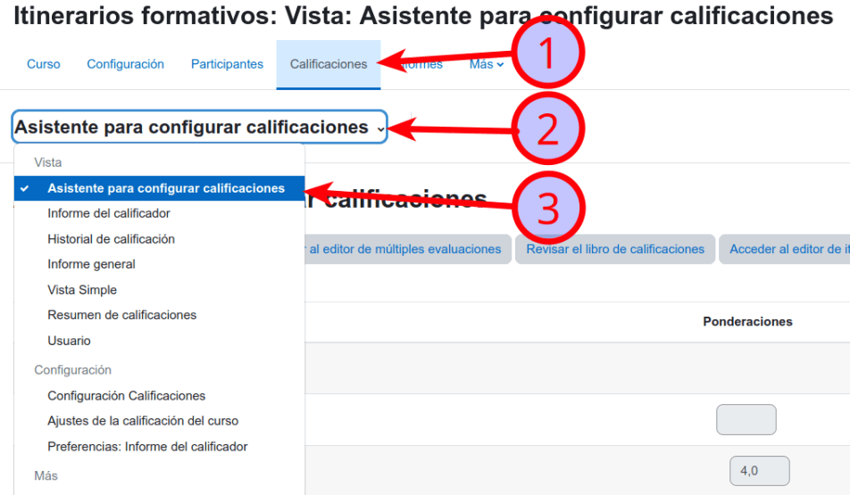
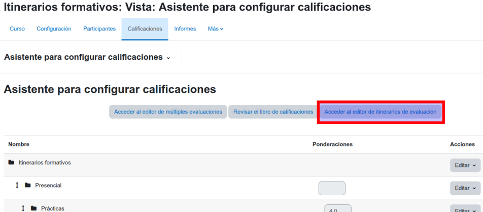

Crea todas la categorías que necesites
El primer paso es crear las categorías que se necesiten. Para ello se debe especificar un nombre y clicar en el botón de Crear.

Des de l'apartat de Qualificacions del vostre curs Moodle podreu accedir l'Assistent per configurar qualificacions

L'Editor d'Avaluacions Múltiples facilita la creació d'un Llibre de Qualificacions amb elements ponderats i una nota de tall per recuperar-lo. Per accedir a l'editor heu d'anar al tauler de control i fer clic a l'opció "Accés a l'editor de múltiples avaluacions".
El primer paso es crear las categorías que se necesiten. Para ello se debe especificar un nombre y clicar en el botón de Crear.

Quan s'hagi creat la categoria, es podrà:
Especificar la seva ponderació.
En cas de necessitat, establir la seva nota de tall. Quan s'estableixi la nota de tall, cal especificar l'element de recuperació.
Triar els elements avaluatius.

Cada element avaluatiu que formi part de la categoria també ha de tenir especificada la seva ponderació corresponent. A partir d’aquí, si és necessari, podem aplicar una nota de tall de la categoria i afegir el seu element de recuperació.
Un cop hàgim acabat, caldrà clicar el botó «Guardar i sortir».

Veureu que tot queda perfectament configurat al vostre llibre de qualificacions del curs.
Aquest projecte s'ha realitzat amb fons públics de UNIDIGITAL, Pla de Recuperació, Transformació i Resiliència, NextGenerationEU.